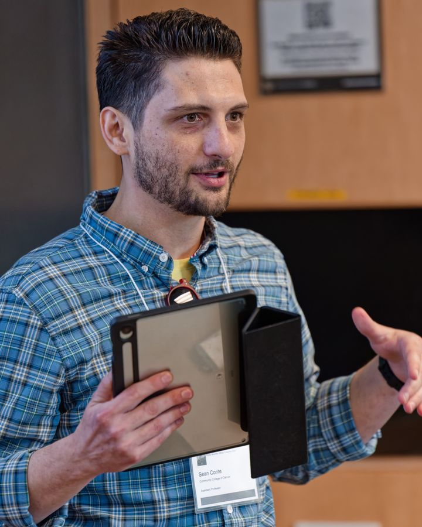

Sean Conte
Assistant Professor of Philosophy
Community College of Denver
- Ph.D. in Philosophy, Texas A&M University, Logic and Decision Theory track
- B.A. in Mathematics and Philosophy, minor in Economics, Fort Lewis College
Research
I investigate how a community’s structure shapes its epistemic capacities.
I use formal models to study how consensus, disagreement, reliability, and resilience emerge from how a community’s members interact, and I apply the results to scientific communities and to public discourse shaped by social media and AI. Each project on the research page comes with a small interactive version of its model.
Teaching
I teach Logic, Ethics, and Introduction to Philosophy at the Community College of Denver. Alongside my courses I build free interactive web apps, including a natural deduction proof assistant that my logic course is built around, along with apps for truth tables, formal syntax, and probability.
Service
I served on CCD’s AI Governance Committee, and this year I am running a series of workshops on AI for faculty. I also started a small undergraduate research group at CCD, after directing an undergraduate modeling research group at Texas A&M.